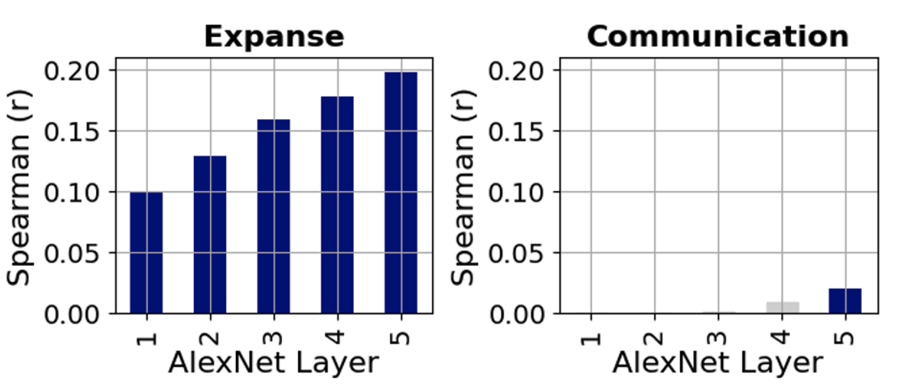
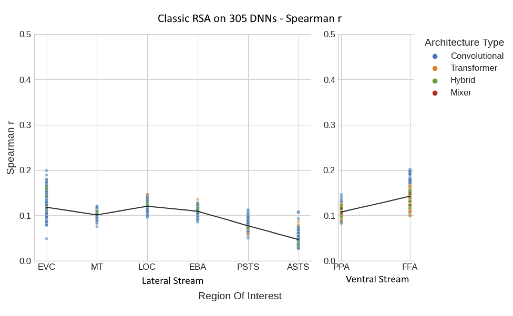
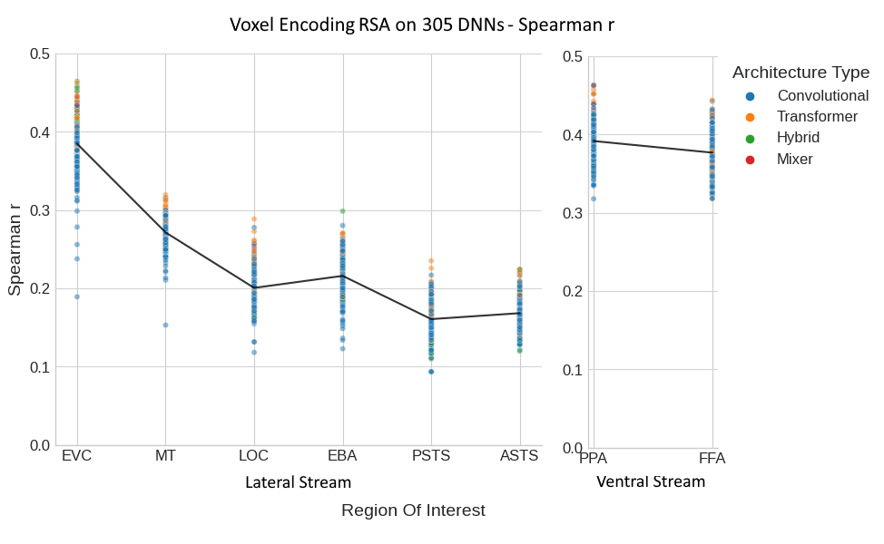
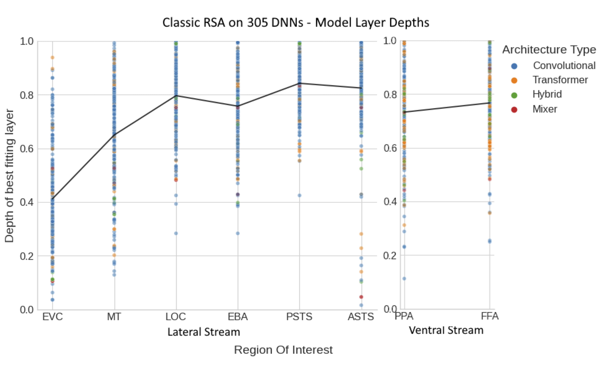
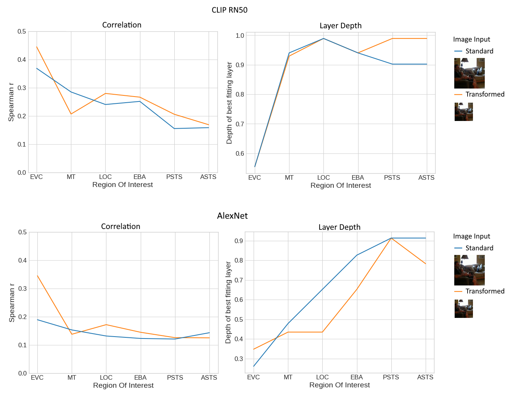

Abstract
Many Deep Neural Networks (DNNs) with diverse architectures and learning objectives have yielded high brain similarity and hierarchical correspondence to ventral stream responses to static images.
However, they have not been evaluated on dynamic social scenes, which are thought to be processed primarily in the recently proposed lateral visual stream. Here, we ask whether DNNs are similarly good
models of processing in the lateral stream and superior temporal sulcus as they are of the ventral stream. To investigate this, we employ large-scale deep neural network benchmarking against fMRI responses
to a curated dataset of 200 naturalistic social videos. We examine over 300 DNNs with diverse architectures, objectives, and training sets. Notably, we find a hierarchical correspondence between DNNs and lateral
stream responses: earlier DNN layers correlate better with earlier visual areas (including early visual cortex and middle temporal cortex), middle layers match best with mid-level regions (extrastriate body area
and lateral occipital cortex), and finally later layers in the most anterior regions (along the superior temporal sulcus). Pairwise permutation tests further confirm significant differences in average depth of the best
layer match between each region of interest. Interestingly, we find no systematic differences between diverse network types in terms of either hierarchical correspondence or absolute correlation with neural data,
suggesting drastically different network factors (like learning objective and training dataset) play little role in a network's representational match to the lateral stream. Finally, while the best DNNs provided a
representational match to ventral stream responses near the level of the noise ceiling, DNN correlations were significantly lower in all lateral stream regions. Together, these results provide evidence for a
feed-forward visual hierarchy in the lateral stream and underscore the need for further refinement in computational models to adeptly capture the nuances of dynamic, social visual processing.
Social Interaction Perception in the Brain
Figure 1: Lateral Stream and the Ventral Stream.
Methodological Overview
Figure 2: From left to right - Participants watch 3 sec naturalistic, social videos and collection of behavioral ratings of videos on predefined social interaction dimensions.
Diverse range of DNN models and extraction of their feature activation in response to video stimuli (bottom). Next, these features are then structured into representational dissimilarity matrices (RDMs) by computing pairwise Pearson
correlation distances across all pairs of stimuli (middle). ROI identification within the brain's lateral and ventral stream followed after standard preprocessing pipeline using GLM (top). The resultant RDMS for each model layer are
compared against the neural RDMS derived from fMRI data (top), indicating the similarity between the model's representation of the stimuli and brain's response patterns. The veRSA approach (bottom, end) builds on the cRSA framework
by incorporating a voxel-wise predictive modeling step (middle, bottom) by fitting the model features to the brain data using ridge regression. Predicted brain responses are then converted to RDMs, using Pearson correlation distances.
These predicted RDMs are compared to the neural RDM to compute a weighted correlation score that reflects the model's predictive accuracy at the voxel level.
Similarity of DNN with Social Features in Visual Scenes

Figure 3: Correlation Between AlexNet Layers and Behavioral Ratings - Correlations based on cRSA between each convolutional layer of AlexNet and two behavioral ratings: Expanse (left) and Communication (right). Bar height represents the Spearman correlation coefficient for each layer, numbered 1 through 5 along the horizontal axis, indicating the sequence of the convolutional layers from input to output within the network. Blue bars indicate statistically significant correlations (p < 0.05 based on permutation test). Gray bars signify statistically insignificant results.
DNN Architecture Comparison Across Ventral & Lateral Stream ROIs


Figure 4: veRSA ROI correlation with different DNN architectures - veRSA results for each ROI, including: (a) early visual cortex (EVC), (b) middle temporal area (MT), (c) extrastriate body area (EBA), (d) lateral occipital complex (LOC), (e) posterior superior temporal sulcus (PSTS), (f) anterior superior temporal sulcus (ASTS), (g) parahippocampal place area (PPA), and (h) fusiform face area (FFA). The data points represent individual DNN models. The color coding of these points denotes the architecture type of each DNN model. The shape of the data points indicates the type of training each model has undergone. The gray bars across the graphs establish the lower and upper bounds of split-half reliability.
Overall DNN-Brain Correspondence in the Lateral and Ventral ROIs

Figure 5: cRSA Correlation DNNs vs. ROIs - The figure presents the overall correlation between DNNs and for lateral and ventral ROIs using classic RSA. The Spearman r correlation values, indicating the strength of the relationship between DNN model features and neural activity, are plotted for different brain regions within both the lateral and ventral streams. Each data point represents the cRSA Spearman r correlation for a specific DNN model within a particular Region of Interest (ROI). The colors of the dots correspond to the architectural type of the DNNs: blue for convolutional, orange for transformer, green for hybrid, and red for mixer. The black line across the plot indicates the average correlation across all DNNs for each ROI, providing a visual summary of the overall trend. From left to right, the ROIs within the lateral stream include the Early Visual Cortex (EVC), Middle Temporal area (MT), Lateral Occipital complex (LOC), Extrastriate Body Area (EBA), Posterior Superior Temporal Sulcus (PSTS), and Anterior Superior Temporal Sulcus (ASTS). For the ventral stream, the Parahippocampal Place Area (PPA) and Fusiform Face Area (FFA) are shown.

Figure 6: veRSA Across Diverse DNN Architectures - This figure illustrates the results from a voxel encoding Representational Similarity Analysis (veRSA) applied to the same DNNs in Figure 4. Plotting conventions follow those in Figure 5.
Hierarchical Correspondence in the Lateral Stream

Figure 7: DNN Layers and Brain ROIs - These panels illustrate the relationship between the depth of the best fitting layer within various DNNs and specific brain ROIs in the lateral and ventral visual streams. The layer depth ranges from 0, representing the first layer of the DNN, to 1, denoting the last layer. The individual data points, color-coded by Architecture Type, indicate the normalized depth of the layer that best matches the activation pattern for each ROI. The black line represents the mean layer depth across all models for each ROI, providing a visual summary of the average hierarchical correspondence. The division of ROIs into Lateral and Ventral Streams facilitates a comparison of hierarchical processing patterns across these distinct pathways.
What's next?.. Image Size Tranformations on Hierarchical Representations!

Figure 8: Effect of transforming input images during model feature extraction - This figure illustrates the results from a voxel encoding Representational Similarity Analysis (veRSA) applied to both CLIP RN50 and AlexNet. The two lines represent the results when transformations to the input images were applied vs no transformations (Standacrd). Follows the same plotting conventions as figure 6 and 7b, respectively.